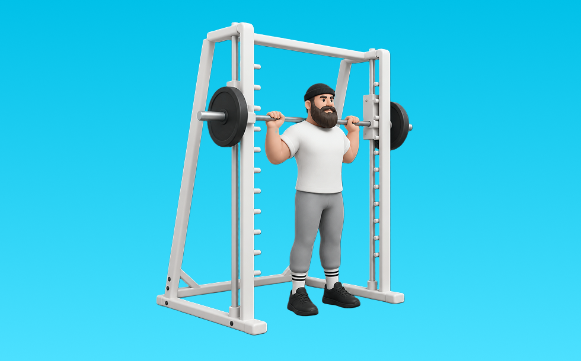

スミススクワット

スミススクワットとは、スミスマシンを使って「しゃがんで立つ」動作で脚（大腿四頭筋、臀筋）＋体幹を鍛える種目です。バー軌道が固定され、補助なしでも追い込みやすいのが特徴で、背すじを保ってしゃがみ、足で床を押して立ち上がる動作を繰り返します。下半身の筋力・筋量アップが期待できます。
- 対象部位
- 脚
- 器具
- スミスマシン
- 記録形式
- 重量・回数
- 別名
- スミスクワット
YouTube動画
-
⚠️足首・体が硬い人はフリースクワットは止めて！スミスとフリーの違いを解説！
-
【初心者向け】スミスマシンの使い方【解説】
-
【脚トレ】ボディビル日本王者のジュラシック木澤がスミスマシンスクワットのやり方を解説！
-
【デカい脚を作る】股関節周り狙い！スミスマシンを使ったスクワットを徹底解説！【教えてジュラシック】
-
スーパースミススクワット基礎編やり方
-
【国内屈指の脚】大久保恵介の脚の土台を作り上げた最強種目、スミスマシンスクワットを徹底解剖。
-
【9割ができてない!?】正しくやれば確実にデカくなる！スミスマシンスクワット｜元日本王者・ジュラシック木澤が解説。
-
【やり方とコツ】骨盤をずらさないスミスマシンスクワットとドロップセットで形の良い脚を作る 【新・バズーカ岡田チャンネル】 #バズーカ岡田
-
前もも張らない！すっきり脚をつくるスクワット＆ブルガリアンスクワットはこうやって💪
-
【スミスマシンスクワット】初心者のフォーム習得に！種類別のやり方を解説！
-
【美尻】スミスマシンを使った正しいスクワットのやり方と注意点【女性向け】
-
下半身を鍛える！スミスマシンで行うスクワットのやり方！
-
【筋トレ悪いフォーム解説】スクワットで怪我をしないために、ヒンジ動作を習得しよう！
-
【スクワット】そのフォーム間違ってます！世界チャンプが教える正しい筋トレ
-
ハックスクワット(スミスマシン)の正しいやり方やフォームを解説◎【もも前筋トレ】
YouTubeショート
-
スミスマシン・スクワットの正しいやり方 | ボディビル日本チャンピオンが解説 #shorts【ビーレジェンド プロテイン】
-
初心者でもわかるスクワットの基本のフォーム
-
初心者必見！スミスマシンで行う脚トレ6選詰め合わせ！ #筋トレ
-
スーパースミススクワットやり方3
-
みなさんはスクワットどのようにされてますか？今回は持田選手がスクワットを伝授！次はどの種目の解説をやってほしいかコメントしてね！ #筋トレ #volix #トレーニング #ちょこっと惜しい
-
【SGIR】スミスマシンスクワットの向き
-
【脚トレ解説】スミス・ハックスクワット #筋トレ解説 #30秒解説 #脚トレーニング
-
スミススクワット
-
みなさんはスミススクワットやってますか？持田選手と薬剤師トレーニーさくらがお尻とハムに効くトレーニングをレクチャーしてくれました！#筋トレ #volix #脚トレ #ちょこっと惜しい #女子トレ
-
こんなスクワットはやめましょう #フィットネス #筋トレ #スクワット
-
スクワットの準備方法 #初心者 #ジム #スクワット
-
やめた方がいいブルガリアンスクワット #筋トレ
-
スミスマシンの使い方②スクワット！スクワットは、太もも前の #24時間ジム 大腿四頭筋、太もも裏のハムストリングス、お尻の大臀筋をメインで鍛える事ができ、骨盤周りの筋肉を鍛える事で姿勢を安定させます
-
ブルガリアンスクワット！お尻に効かせる方法と前ももに効かせる方法🫶🏽
-
【怪我せず鍛えられる】僕の脚を強くしたスクワットルーティンを紹介します #筋トレ #脚トレ #スクワット #ボディビル #shorts
-
今すぐ辞めて⚠️脚が太くなるブルガリアンスクワット
-
スミスマシンスクワットは足の位置で刺激が変わる #GronG #グロング #筋トレ #フィットネス #スミスマシン #スクワット #ワイドスクワット #大臀筋 #内転筋 #大腿四頭筋
-
スクワットでよくある間違い3つと改善方法【筋トレ】
動作方法
- 足幅を決め、体幹を固める
- 股関節と膝を同時に曲げて下ろす
- 足裏全体で床を押して立ち上がる
動作ポイント
- 膝とつま先の向きをそろえる
- 胸を落としすぎない
- かかとを浮かせない
ワンポイントアドバイス
- ウォームアップで股関節と足首を動かす
- 高重量の日はセーフティ設定を確認する
目的別回数設定
目的や体力に応じた一般的な目安です。無理のない範囲で調整してください。
- 筋力アップ
- 1〜5回
- 筋肥大
- 6〜12回
- 持久力アップ
- 13〜20回
YouTube動画について
動画はYouTubeの公開情報をもとに表示しています。内容は投稿者によるもので、Biggrによる監修ではありません。
アプリを入手
筋トレやトレーニングの記録はBiggrにお任せください。今すぐ無料で使い始められます。